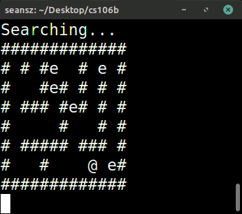
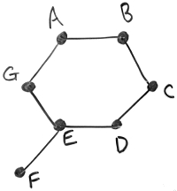
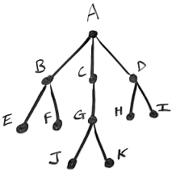

Lecture Video
Here is the Prezi from today's lecture:
Contents
1. Overview
2. Terminology
3. Flavors and Properties of Graphs
4. Representations
5. Stanford Graph Class
6. Minimum Spanning Trees
7. Topological Sort
8. Graph Traversal, Exploration, and Shortest Paths
9. Pathfinding Animations
10. Depth-First Search (DFS)
11. Breadth-First Search (BFS)
12. Additional Examples: Tree Traversals with DFS and BFS
13. What's next?
14. Exercises
Overview
Today, we took a whirlwind tour of one of the most flexible and important data structures in computer science: graphs!
Graphs are node-based structures (or "linked structures"), and they should look somewhat familiar already from our explorations of linked lists and trees earlier this quarter. Some key distinctions here are:
- Graphs don't necessarily have just one primary entry point. Compare this to the presence of a head node in every linked list and the presence of a root node in every tree.
- We are not constrained to relationships that imply ordering (next or previous, left child or right child) or hierarchy (parent or child).
For most of today's content coverage, I defer to the Prezi included above, and I avoid reiterating in these notes the sundry example applications covered in lecture today. A light summary of key points is included below, as well as an elaboration on DFS and BFS.
Terminology
We saw the following key terms when exploring the basic anatomy of a graph. Examples of each of these are included in the Prezi at the top of today's notes.
- A graph is a collection of nodes (or vertices) and edges.
- A path is a list of vertices in which successive vertices are connected by an edge in the graph.*
- A cycle is a path that begins and ends at the same vertex.
- The length of a path (path length) is the number of edges in that path.
- Two vertices are said to be adjacent (or neighbors) if there is an edge between them.
- A vertex is reachable from another vertex in a graph if a path exists to that vertex from the other.
- A loop is an edge from some vertex to itself.
- A complete graph is one in which there is an edge from every vertex to every other vertex in the graph.
- A sparse graph is one with a small number of edges (relative to the number of possible edges in that graph).
- A dense graph is one with a large number of edges (relative to the number of possible edges in that graph).
(*) Note that different sources use different definitions for some of these terms. For example, some sources say a path cannot include the same vertex multiple times, while other sources allow paths to contain repeat vertices and instead use the term "simple path" to refer to one without repeats. Some sources make a similar distinction with the terms "cycle" and "simple cycle." Additionally, some sources define a "path" as a list of edges rather than a list of vertices (although the distinction there is subtle and might not be obvious depending upon representational notation).
For the purposes of this class, we will stick to the definitions above. If you have any questions about these definitions, please always feel free to ask, especially if you have been exposed to graph theory before and have encountered alternative definitions for some of these terms!
Flavors and Properties of Graphs
In addition to the fundamental structural terms above, we saw a few different flavors and properties of graphs, along with potential applications for each of these:
- A graph can be weighted or unweighted. A weighted graph has numeric weights associated with its edges.
- A graph can be directed or undirected. In an undirected graph, an edge between vertices A and B can be taken in either direction (from A to B or from B to A). In a directed graph, we use arrows to indicate directionality for each edge; in a directed graph, an edge from A to B cannot be taken from B to A.
- A graph can be connected or disconnected. A graph is connected if every vertex is reachable from every other vertex. Otherwise, the graph is said to be disconnected.
Representations
The also discussed the two most common ways to represent a graph: with an adjacency list or an adjacency matrix. Following are some key points about each representation. (For examples, see today's Prezi.)
- Adjacency List
- An adjacency list is a collection of lists. For each vertex in our graph, we maintain a list of all the vertices it is adjacent to. The traditional conception of an adjacency list is as an array of linked lists, but because looking up elements in a linked list can be slow -- O(n) in the worst case -- it's not uncommon to implement an adjacency list using an array of hash tables instead, which allow for efficient insertion and lookup operations (unless we get unlucky and encounter tons of collisions, which is always a possibility).
- If we have a dense graph, each list can tend toward a length of O(n) (where n is the number of vertices in our graph). A collection of n such lists gives an overall space complexity of O(n2), but with the added overhead of lots of pointers (if using linked lists) and potentially slow, O(n) lookup runtimes (which could happen even with hash tables, if we happen to encounter an excessive number of collisions). So, if our graph is dense, and we have to deal with using O(n2) space to represent our graph, we might be better off switching to an adjacency matrix representation, which uses that amount of space but guarantees fast insertion and lookup runtimes. If our graph is sparse, the adjacency list is probably a good choice of representation.
- If we have a sparse graph and each adjacency list has an average length of O(1) (some small constant number of vertices), then our overall space complexity is O(n).
- Given some vertex, we can efficiently list all the vertices adjacent to that one by just iterating over the list associated with that vertex. If some vertex, v, is adjacent to k other vertices, iterating over that list of vertices can be done in O(k) time with the adjacency list representation.
- Adjacency Matrix
- An adjacency matrix is an n-by-n grid (or 2D array) where the cell at row i and column j indicates whether there is an edge from vertex i to vertex j. Such a matrix could use boolean values to represent the presence (or lack thereof) of an unweighted edge, numeric values to represent edge weights or the number of edges between two nodes, or an exotic combination of or variation on any of those things.
- The runtime for inserting an edge or looking up whether two vertices are adjacent in an adjacency matrix is O(1): we just jump to the corresponding cell in our array.
- An adjacency matrix always uses O(n2) space. If we have a sparse graph, this is wasteful, and we might be better off with an adjacency list instead, which could bring us down to O(n) space. In the case of a very dense graph, we might as well use an adjacency matrix because the space complexity of the adjacency list would be just as bad, but the adjacency matrix at least offers O(1) runtimes for edge insertion and lookup.
- An adjacency matrix is also somewhat wasteful if our graph is undirected, as each edge ends up getting represented twice in the matrix. The matrix ends up being symmetrical about one of the diagonals.
- Given some vertex in our graph, if we want to list all the vertices adjacent to that one, we have to loop through the entire row for that vertex in our adjacency matrix: an O(n) operation. If a vertex is only adjacent to k other vertices in the graph and k is significantly smaller than n, this operation ends up being significantly slower than what we would encounter with an adjacency list.
- In some contexts, adjacency matrices might be easier to work with in code than adjacency lists, particularly if we are working in a language where we don't have access to convenient container structures such as linked lists or hash sets.
With both of the representations above, we can use structs to associate each edge with additional information (numeric weights, labels, the number of edges between two vertices if we're allowing more than one, and so on).
(Key take-away!) We generally prefer to use adjacency lists to represent sparse graphs and adjacency matrices to represent dense graphs, although there might be some exceptions depending on the unique needs of our applications and just how large n is.
Stanford Graph Class
The Stanford C++ Library has a Graph class you can use for implementing graph algorithms! Below is a basic example. To explore the full functionality of this class, simply #include "basicgraph.h" in a Qt project, and ctrl+click on the "basicgraph.h" portion of that line to go to the header file and see what the interface looks like for this class.
#include <iostream>
#include "basicgraph.h"
using namespace std;
int main()
{
BasicGraph g;
g.addNode("u");
g.addNode("v");
g.addNode("w");
g.addEdge("u", "v");
g.addEdge("v", "u");
g.addEdge("v", "w");
g.addEdge("w", "v");
...
return 0;
}
Minimum Spanning Trees
We talked briefly about minimum spanning trees (MSTs) and some potential applications for MST construction. These are something you should look into in more detail on your own time. You might also consider looking into at least one of the algorithms that I mentioned for constructing MSTs: Prim's algorithm or Kruskal's algorithm. You never know when having one of those in your back pocket might help you solve an interview problem.
Topological Sort
We also talked briefly about topological sort, its relationship to dependency graphs, and some potential applications. We will aim to discuss this in a bit more depth on Monday, time permitting.
Graph Traversal, Exploration, and Shortest Paths
Toward the end of class, I gave a quick, high-level overview of DFS, BFS, Dijkstra's algorithm, and A*:
- Depth-First Search (DFS) - Goes as deeply as possible down one path, then backtracks and tries alternative routes when it hits a dead end. DFS will find a path from our source vertex to our target vertex (provided such a path exists), but it won't necessarily be the shortest such path.
- Breadth-First Search (BFS) - Explores the neighbors of our source vertex, followed by the neighbors' neighbors, and so on, until it finds our target vertex (or exhausts all possible avenues for search without finding the target). This one is guaranteed to find the shortest path from our source to the goal, but it can be quite slow.
- Dijkstra's Algorithm - Finds shortest paths in a graph, but unlike BFS, it takes edge weights into account. We will discuss this in more detail on Monday.
- A* Search - Like Dijkstra's algorithm, but introduces a function that biases us toward exploring nodes that get us closer to some predetermined destination in our graph. We will discuss this in more detail on Monday.
For more detail on DFS and BFS, see below.
Pathfinding Animations
Here is the pathfinding visualization tool I used to demo BFS and A* in class today. Notice how slow BFS is compared to A*:
Depth-First Search (DFS)
The key insight behind DFS is that it goes as far down a path as possible (without visiting any node more than once) before backtracking and exploring different branches through the graph. That is, it goes deep before branching out. We encountered DFS earlier this quarter in A2, when we explored mazes via the Grid class. We observed that behavior again in the mazerunning I presented in class when we covered backtracking:

(Important terminological note!) When we use this algorithm to explore an entire graph (rather than stopping at some particular node we're searching for), we can call it a depth-first traversal, although it's also common to just call it DFS even when we're not technically searching for a particular target node.
A DFS can start at any node in a graph. Consider, for example, the following graph, G1:
Graph G1

Starting from vertex C in G1, one valid DFS traversal is: C D E G A B F
Notice that we had a choice when we reached vertex E: we could have gone to vertex F or G next. (The decision is arbitrary when we perform these traversals by hand. Programmatically, the decision will be influenced by the order in which the vertices are represented in our adjacency matrix or adjacency list.)
Following is a list of all valid DFS traversals starting at vertex C in G1:
- C D E G A B F
- C D E F G A B
- C B A G E D F
- C B A G E F D
DFS can be implemented using a stack, as described in A2.
Breadth-First Search (BFS)
BFS takes the complementary tack to DFS. It explores all the neighbors of a vertex before moving on to the neighbors' neighbors. It goes as broad as possible before going deeper into the graph.
(Important terminological note!) As with DFS, when we use BFS to explore an entire graph (rather than stopping at some particular node we're searching for), we can call it a breadth-first traversal, although it's also common to just call it BFS even when we're not technically searching for a particular target node.
As with DFS, a BFS traversal can start at any node in a graph. Consider, for example, the graph G1 from the previous section of notes. Starting at vertex C in G1, one valid BFS traversal is: C B D A E G F
Notice that we start by visiting all vertices adjacent to C (namely, B and D). Because we visited B before D, we must visit all neighbors of B (namely, A) before visiting all neighbors of D! Then we visit all neighbors of D, all neighbors of A, and so on, until every vertex in the graph has been visited.
(Key take-away!) The note highlighted above is a key take-away for BFS; failure to take note of that point is a common stumbling block and point of misunderstanding when people are asked identify valid breadth-first traversals through a graph. To reiterate: if we visit B before D in our BFS, we must then visit B's neighbors before D's neighbors. If, on the other hand, we visit D before B in our BFS, we would subsequently visit D's neighbors before B's neighbors.
Here again is the graph G1 for ease of reference:
Graph G1
Following is a list of all valid BFS traversals starting at vertex C in G1:
- C B D A E G F
- C D B E A G F
- C D B E A F G
BFS can be implemented using a queue, as described in A2 (as well as in class today).
Additional Examples: Tree Traversals with DFS and BFS
The breadth and depth metaphors perhaps make more intuitive sense when we consider BFS and DFS traversals of a tree. (Recall that a tree is a graph, so I'm not doing anything unconventional or weird by performing BFS or DFS traversal on one.) Consider, for example, the following graph, G2:
Graph G2

Starting at vertex A in G2, one valid DFS would be:
A B E F C G J K D H I
Notice that we go as deep as possible down any given path before backtracking and exploring other paths.
Starting at vertex A in G2, one valid BFS would be:
A B C D E F G H I J K
What's next?
On Monday, we'll discuss Dijkstra's algorithm in more detail. If time permits, we will also discuss A* in more detail. That will conclude our coverage of new material for the quarter. We will spend Wednesday and Friday of next week wrapping things up.
Exercises
1. Suppose we want to create a graph to help study the spread of certain pathogens via public transportation and rideshare systems. In the graph, every person living in the U.S. is represented by a node, and we place an edge between between two nodes if the people represented by those nodes have been in close proximity with one another on public transit or in a rideshare within the past seven days.
- Should this graph be directed or undirected? Why? (Justify your response.)
- Would you expect the graph to be connected or disconnected? Why? (Justify your response.)
- Should we use an adjacency list or an adjacency matrix to represent this graph? Why? (Justify your choice.)
2. Why is C B D A E F G not a valid BFS for graph G1 from today's notes? (Hint: See the highlighted key take-away from the section on BFS.)
3. How many valid DFS and BFS traversals are there for graph G2 above (the tree used in the BFS and DFS examples) starting at vertex A? (Note: This is just a reinforcement exercises and is not meant to imply that there is an important pattern or formula that I want you to discover for determining the number of BFS or DFS traversals in an arbitrary graph or tree.)
4. Write a function that can read a graph from a text file into an adjacency matrix. An adjacency matrix isn't always the best representation to use for a graph (remember, for a sparse graph, the adjacency matrix has a lot of wasted space), but I'm suggesting that here because it's a fairly straightforward one to work with in code. Set up your function to read in files with the following format:
7
A
B
C
D
E
F
G
0 1 0 0 0 0 1
1 0 1 0 0 0 0
0 1 0 1 0 0 0
0 0 1 0 1 0 0
0 0 0 1 0 1 1
0 0 0 0 1 0 0
1 0 0 0 1 0 0
The file above represents graph G1 from today's notes. The first line tells us how many nodes there are in the graph, n, which allows us to create an appropriately sized grid to store our adjacency matrix. The next n lines give labels or names to our nodes. Those can be stored in a vector for ease of reference. The final n lines give us an adjacency matrix. The first of those final n lines tells us which nodes have an edge from vertex A (where 0 indicates no edge, and 1 indicates an edge). Within that line, the pattern 0 1 0 0 0 0 1 indicates the following:
- edge from A to A? no (0)
- edge from A to B? yes (1)
- edge from A to C? no (0)
- edge from A to D? no (0)
- edge from A to E? no (0)
- edge from A to F? no (0)
- edge from A to G? yes (1)
The line after that tells us which nodes have an edge from vertex B, and so on.
5. Challenge yourself to code up BFS and DFS from scratch, on your own, without peeking back at your code for A2 or implementations posted online. (You should be doing this with most algorithms we cover in lecture. Regularly working through exercises like this -- where you have a compact, elegant algorithm that has somewhat sophisticated behaviors -- is a key way to ramp up your coding skills.) Note that DFS can be coded up iteratively with a stack as well as recursively. Try coding it up both ways. Run your implementations on the graph whose input file is given above (in the previous exercise) to check your results.
6. When tracing through a queue-based implementation of BFS in class today, I marked nodes as processed when they were placed in the queue -- not when they were removed from the queue. An alternative would be to mark a node as processed after it's pulled out of the queue. In that case, every time you pull a node out of the queue, you'd check whether it was processed already and print it out only in the case where it was unprocessed. What is the big downside to implementing the algorithm that way? (Hint: Trace through both of these approaches to BFS using a complete graph to see the potential performance difference.)